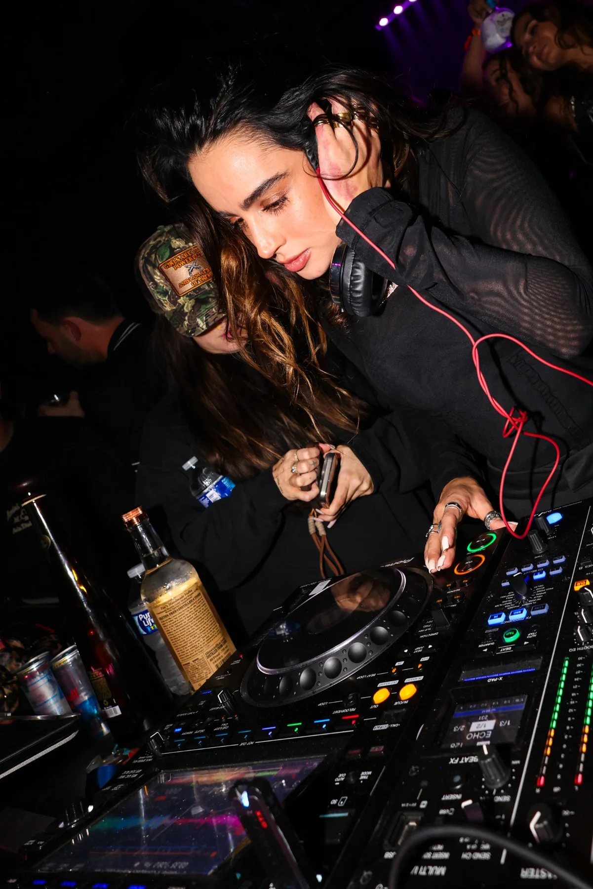

Capture the atmosphere
Show the room, lighting, crowd, and moments that define the event.

Clubs · DJs · Entertainment
Bold nightlife photography and promotional content built for venues, performers, promoters, and events that need to feel alive online.
Strong nightlife content creates urgency. It should make the room feel full, the energy feel real, and the next event feel impossible to skip.
Coverage can include performers, guests, VIP moments, venue atmosphere, branded activations, and vertical content designed for quick social publishing.
Click any Sommer Ray image to visit her Instagram. Other nightlife images open larger.
Show the room, lighting, crowd, and moments that define the event.
Create sharp artist, guest, and partner images that are easy to share and tag.
Build a content library that supports recap posts, announcements, ticket sales, and sponsor value.